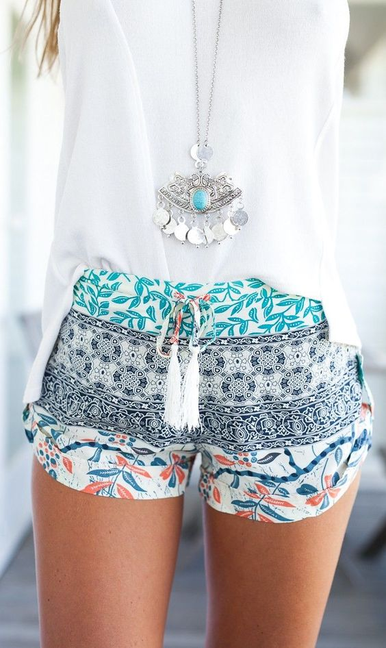

<ion-view view-title="Community">
  <ion-content class="padding">
    <div class="postContainer" ng-repeat="image in local track by $index">
        
        <button ng-click="vote(2, $index)" class="button button-dark leftButton">NO</button>
        <button ng-click="vote(1, $index)" class="button button-dark rightButton">YES</button>
        <h3>From: {{image.transmitternumber}}</h3>
    </div>
<!--
    <div class="postContainer">
      
      <button class="leftButton">yes</button>
      <button class="rightButton">no</button>
    </div>
-->
  </ion-content>
</ion-view>
